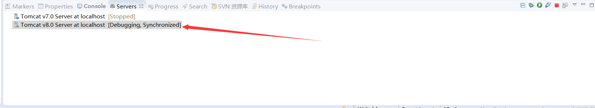
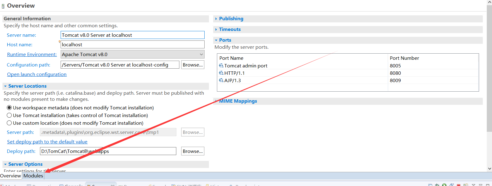
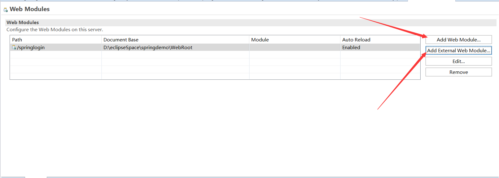
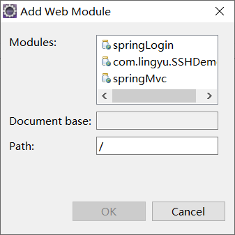
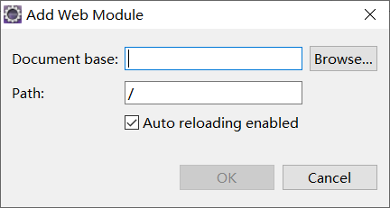
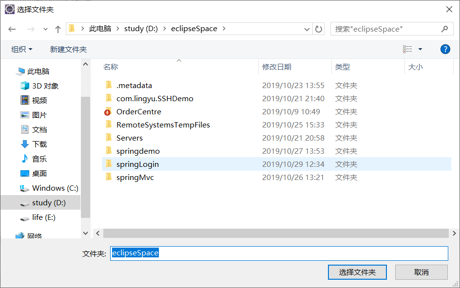
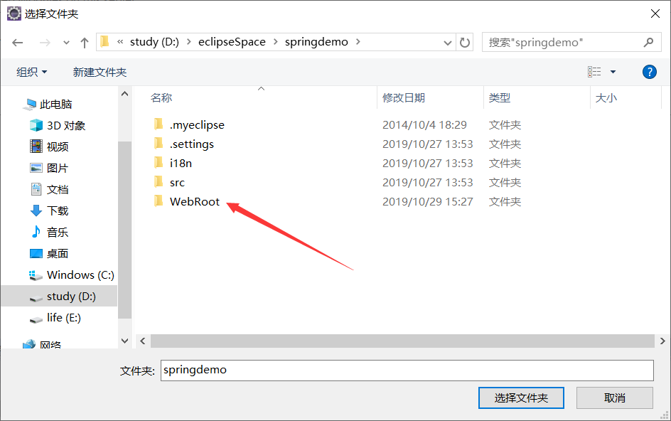
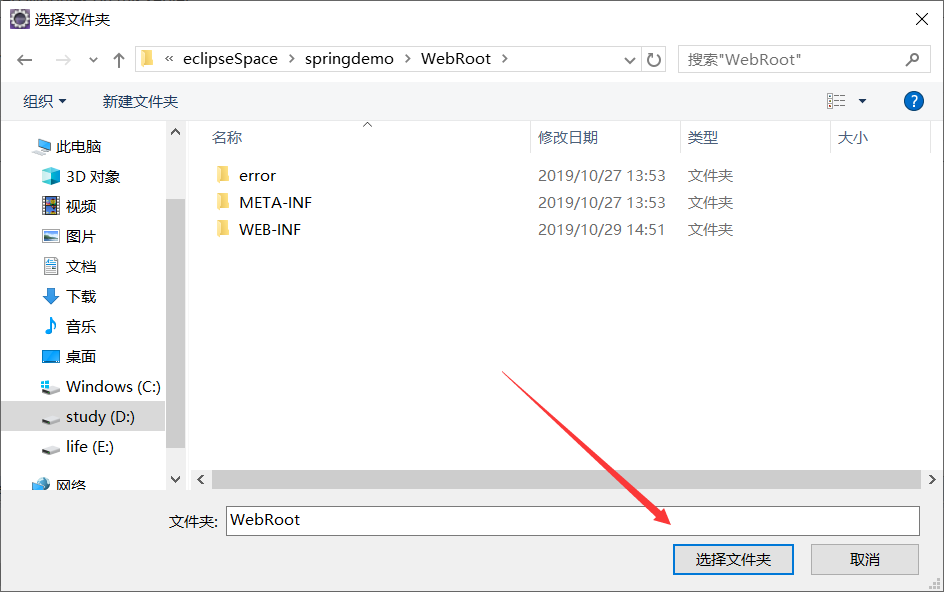
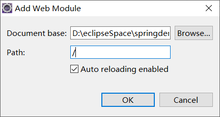
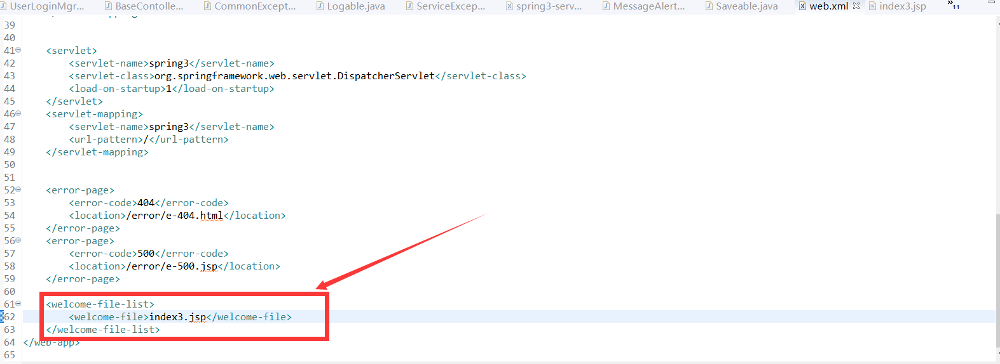

很多时候我们在启动项目的时候都会在浏览器输入"localhost:+端口号+项目名称"
其实tomcat是可以省去这种麻烦的,通过设置项目的虚拟路径就可访问项目了
第一步

选择eclipse中的一个tomcat,然后双击

点击Modules

如果你创建的项目是web项目,那么可以点击第一个,反之点第二个

这是web项目的视图,选择其中的一个项目然后在path中输入你想起的名字,然后ok.保存.重启tomcat就可以通过你设置的虚拟路径来访问你的项目了.

这是项目为非web项目的视图
点击Browse...

之后会弹出选择文件夹的窗口,然后选择你的非web项目

点击WebRoot

最后选择文件夹

然后在path中输入你想要的名字
这样非web项目的虚拟路径就设置好了
这里需要注意的是,通过这种方式,在访问项目的时候tomcat会自动选择该文件夹下名为"index.jsp"的文件.如果你的首页不是这个名字那就需要修改项目的欢迎页面

在你的配置文件的欢迎页面的标签中就可以修改项目的首页了
如果有哪里说的不对的,欢迎大佬指正.